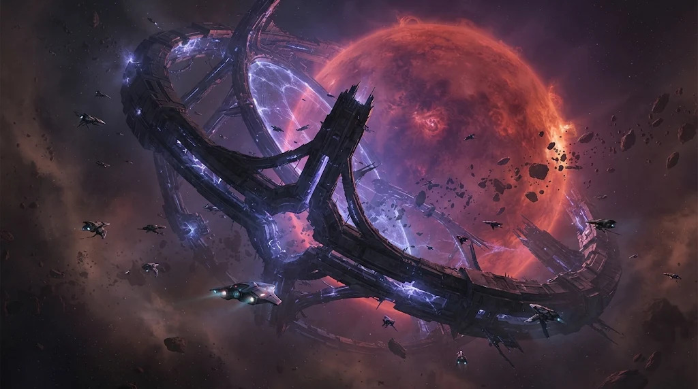

Exploration spatiale
[Détaillez la première mécanique principale du jeu].
Un jeu de [Genre, ex: exploration narrative / survie spatiale] par Flexarion Studio.

[Décrivez le contexte de science-fiction : ex. En l'an 2450, l'humanité découvre une structure alien mystérieuse...].
[Détaillez la première mécanique principale du jeu].
[Détaillez la deuxième mécanique principale du jeu].
[Détaillez la troisième mécanique principale du jeu].